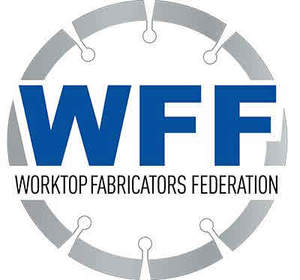

Trade Mark Journal No.2025/015 11 April 2025
UK00004176712 20 March 2025 (35)
Collective Mark

- Class 35
- Business advice; inquiries or information; Business management advice and assistance; Promoting the goods and services of others over the Internet; Trade fair (Organization of -) for commercial or advertising purposes; Consumers (Commercial information and advice for -) [consumer advice shop]; Advertising services for the literary industry; Advertising through all public communication means; Advisory services (Business -) relating to the management of public sector businesses; Providing information concerning commercial sales; Matching skilled volunteers with non-profit organisations; Organisation, operation and supervision of sales and promotional incentive schemes; Direct market advertising; Marketing advice; Work analysis to determine worker skill sets and other worker requirements; Assistance to management in commercial enterprises in respect of advertising; Assistance to commercial enterprises in the management of their business; Preparation of advertising material; Advisory services relating to business organization; Administration of membership schemes; Sales promotion for others; Business advice; Distribution of publicity materials (flyers, prospectuses, brochures, samples, particularly for catalogue long distance sales) whether cross border or not; Rental of all publicity and marketing presentation materials; Wholesale services in relation to wall coverings; Blogger outreach services; Providing business management start-up support for other businesses; Organisation and holding of fairs for commercial or advertising purposes; Organization, operation and supervision of sales and promotional incentive schemes; Online community management services; Promoting the goods and services of others through the administration of sales and promotional incentive schemes involving trading stamps; Promoting the sale of goods and services of others by awarding purchase points for credit card use; Sales promotion for others by means of privileged user cards; Management advice; Assistance to industrial or commercial enterprises in the running of their business; Assistance and advice regarding business organization; Advice for consumers (Commercial information and -) [consumer advice shop]; Online business networking services; Commercial information and advice for consumers [consumer advice shop]; Assistance and advice regarding business management.
Worktop Fabricators Federation
The Regulations provisionally accepted by the Registrar for governing the use of this Collective trade mark are open to inspection at the Trade Marks Registry, from where copies may be obtained. If no opposition arises the Registrar will approve the Regulations and the mark will proceed to registration.